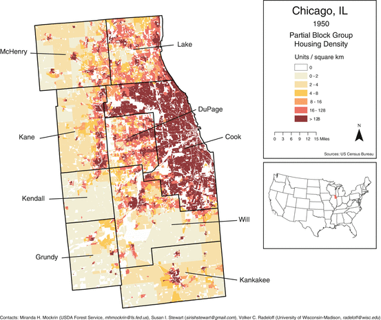
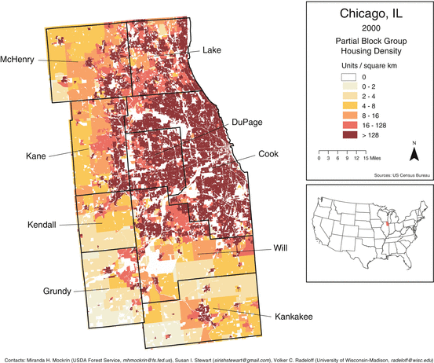
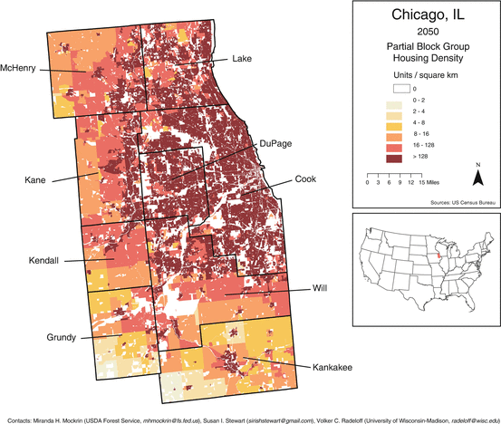

Key Findings
- Chicago is the third largest city in the United States with a population of 2.7 million people
- The landscape in and around the city was influenced by indigenous population for centuries but has been radically transformed over the past century and a half by settler populations
- Enlightened planning at the turn of the twentieth century has resulted in the setting aside of considerable amounts of open space
- Chicago Wilderness is a regional biodiversity conservation alliance with over 260 institutional members representing federal, state, and local agencies, public land-management agencies, conservation organization, and scientific and cultural institutions
- The continued expansion of medium and high density housing in the Chicago area will intensify the need for effective biodiversity conservation.
18.1 Introduction
With a population of 2.7 million, Chicago is the largest city in the US Midwest and the third largest in the United States. The greater Metropolitan Statistical Area (MSA) to which Chicago belongs has a population of almost 9.5 million. The radical and rapid transformation of the landscape that has occurred over the past century and a half in order to accommodate a burgeoning population, might suggest that Chicago is not a promising place to undertake large-scale conservation efforts. However, the region supports conservation programs that have received local, national, and international recognition.
In this chapter we discuss the factors that shaped the biodiversity of the Chicago region and evaluate the conservation significance of these ecological systems in their current state. We start with a vignette that describes Midwestern landscapes in the years just before the emergence of Chicago, and inspect the way in which these systems were rapidly transformed from the middle nineteenth century to the present day. We then turn our focus to the governance and management of Chicago’s ecosystems, with a particular focus on the work of Chicago Wilderness, a regional biodiversity conservation alliance that emerged over a decade ago and that now has more than 260 institutional members.
Even in the mid-nineteenth century, vast stretches of Midwestern natural landscape persisted in the Chicago region. It is against the record of the natural extravagance that predated the city that current efforts to preserve and restore are oftentimes assessed. Noting that these landscapes persisted up until only a century and a half ago is a reminder of how rapidly the landscape of this region was transformed to today’s thriving city. We start the discussion by in the following sections examine those ecological factors that shaped the ecological systems of the Midwest before, and then discuss the anthropologically introduced stresses that resulted in the rapid transformation of the region.
18.2 Ecological History of the Chicago Region
18.2.1 An Ecological Vignette of Early Chicago: Colonel Colbee Benton’s Sleepless Night
On August 19th 1833 Colonel Colbee Chamberlain Benton (1805–1880) left Chicago with Louis Ouilmette, a young man of French and Potawatomi heritage, to inform local Indian tribes that their federal annuities would be paid in September of that year. Benton’s trip, recorded in A visitor to Chicago in the Indian Days: Journal of the Far-Off West, was taken 1 year after the end of the Black Hawk war which ended most tribal resistance to white settlement of the Chicago area. That same year the Potawatomis, a tribe that dominated in the lands that became Chicago since the 1690s, relinquished their rights to their lands in Illinois. At that time the white settler population was little more than 150 people. A few years later in 1837 Chicago was chartered as a city.
That Benton’s journey was undertaken at time of tension between the indigenous and settler population is reflected in his descriptions of their trip. On the night of August 24th the pair of travelers passed through some oak groves and arrived at a small stream in a little prairie in Southeast Wisconsin and they camped there for the night. As night fell they heard Indians around their camp. Benton hid beside a large tree and at Ouilmette’s suggestion he removed his straw hat since it was “a good mark to shoot at.” Assessing the danger they found themselves in, Louis remarked that “there were occasionally some of the Sauks and Fox Indians wandering about in [that] part of the country, and from them [they] could not expect much mercy.”
Benton didn’t sleep that night. However, even if they had been “in danger of suffering from the power of their tomahawk and scalping knives” it was not fear that kept him awake. He remarked, in fact, there was something about their circumstances “so novel and romantic about it that it dispelled every fear…” He was far from home, everything looked “wild and terrible”, he was surrounded by “savages”, and yet it all seemed “lovely and romantic and beautiful”. He felt happy.
So what kept Benton from his sleep? It was the noise! Some of the noise certainly may have emanated from the Indians who “mocked almost every wild animal.” But also there were unfamiliar birds calling, as well as foxes and raccoons. In the distance, wolves howled and the owls hooted in concert with the wolves. The mosquitoes added their part to “the music”. A sleepless, noisy, vaguely threatening night, and yet Benton declared that never before had he “passed a night so interestingly and so pleasantly…”
***
So here was Chicago around the time of its charter and slightly afterwards: a settler population which numbered in the hundreds, surrounded by a loud chorusing of people and wildlife. Prairies that stretched for over a hundred miles, and wildlife including gray wolf, bison, black bear and perhaps up to ten other mammal species that would disappear by the early years of the twentieth century. Benton was just one of the many early writers who explicitly recorded the diversity of the vegetated landscape of northeast Illinois and southeast Wisconsin as they traveled through it. Near Round Lake (Lake County, Illinois) Benton noted that he and Ouilmette ventured through little oak openings then out onto the prairie, walked alongside little streams with “heavy timber”, and, very muddily, crossed “tremendous marshes”. The prairie grasses were, as they often are described in these early accounts, so tall and wet that passing through on horseback was like “wading through water.” Although the prairie was often likened to an ocean, undulating and free, the dominant metric for its depth was a man on a horse. Benton and Ouilmette shot, usually unsuccessfully, at any birds they could see: wild geese, ducks, loons, pigeons, a sand crane (successfully bagged), and a prairie hen (killed and roasted for the dog). Streams were home to “some monstrous pickerel and other large fishes.” Dotted infrequently through this wilderness were the cornfields of Indians. Thus it was a variegated landscape supporting a rich diversity of life, human and non-human. A gloriously loud landscape it was then, one interesting and uncanny enough to keep a man awake and happy.
***
We present the encounter between Benton and Ouilmette and the native peoples in the vignette above to illustrate a turning point in the history of natural ecosystems in the Chicago Wilderness region. The encounter also represents an encounter between two social systems and not merely the individuals representing them. This is theme we will discuss later in this overview, but here we simply note that the “settler” and “pre-settler” social systems differed profoundly on issues such as their conception of nature, land ownership, land management and so on. Both systems has implications for the biodiversity or the region, though the social system of the settlers and the density of individuals associated with it has had inarguably a more rapid and extensive impact on the biota of the Chicago Wilderness.
In what follows we briefly describe the ecological history of the Chicago region. We use this description as a background to our account below of efforts to sustain the area’s distinctive biodiversity. More details on the ecological history of the region can be found in Heneghan et al. (2012).
18.2.2 Ecological Development of Chicago’s Ecosystems
Lake Michigan and the other Great Lakes formed as a result of the Wisconsin glacial advancement and retreat 16,000 years ago. The advance and retreat of the ice deposited gravel, sand, silt, clay and rocky debris throughout the region. The composition of soils and their drainage, a result of glaciation, have significantly shaped the Chicago region’s biodiversity.
Climatic shifts have also influenced the successional development of the region’s biodiversity. The present climate of the region is continental, with winters characterized by periodic incursion of cold Arctic air and at least two or three major storm systems resulting in significant snow accumulation. Average temperatures in January are typically below 0 °C. Because of the relative flatness of the terrain, wind-chill effects can be significant. Summers are dominated by warm humid air originating from the Gulf of Mexico, with summer temperatures averaging above 27 °C. Temperatures in all seasons are also influenced by the proximity of Lake Michigan, second most voluminous of the Great Lakes, which produces a so-called lake effect, resulting in cooler temperature nearer the lake in summer and warmer breezes during the cold season (at least when the lake is not frozen). Precipitation totals 86 cm a year on average, most of it falling as rain in the summer months (Greenberg 2002).
Considerable attention has been paid to reconstructing the post-glacial history of Illinois (King 1981; Baker et al. 1989; Nelson et al. 2006). The initial tundra-like post-glacial vegetation was briefly replaced by spruce (Picea), which in turn was replaced by deciduous trees as temperatures increased. Temperatures and precipitation vacillated for several thousands of years, and vegetation responded with conifers and deciduous trees alternatively dominating. The landscape configuration familiar to contemporary observers, characterized by a patchwork of woodlands, prairie and wetlands, emerged about 8,500 BP. Although these patterns remained highly dynamic, xeric oak-hickory forest dominated in the immediate Chicago region (Northern Illinois). In the last several centuries the region has experienced cooling and xeric trends alternating with warming and more humid periods. In the years before the large-scale clearing of vegetation associated with the establishment and growth of Chicago, a warming trend increased the prevalence of deciduous vegetation.
The role of fire considered in the context of edaphic and climatic variability in configuring the landscape and maintaining disturbance-dependent habitats across northeast Illinois has been contested among academic ecologists over the course of the last 100 years. Even by the 1930s, when Edgar Nelson Transeau wrote about the factors influencing the origins, development and maintenance of the Midwestern prairies, he could outline several competing hypotheses already extensively debated in the literature (Transeau 1935); for instance, prairies as “scars” persisting after the ecological conditions producing them had terminated but maintained by human intervention; prairies as persisting because of unfavorable soil conditions (“immature soils”); prairies as the “pyrogenic victory of Indians and pre-Indians” who maintained the prairies as pasture and hunting ground. To this list one can add the role of large grazers, especially bison, in maintaining prairie vegetation (Anderson 2006). Contemporary opinion is that the mixture of prairie, savanna, and forest vegetation in the Chicago region, the “vegetation mosaic”, is influenced by both climate and fire (Anderson 2006). Research on the use of fire as a means of maintaining this mosaic has been prevalent since the 1960s. Although the use of prescribed fire as a management tool is generally understood and accepted by the public in the region, nevertheless successful implementation requires negotiation with the local community.
18.3 Urbanization and the Current State of Regional Biodiversity
18.3.1 Chicago Emerges
The suitability of lands southwest of Lake Michigan for the growth of an urban center is attributable to many of the same factors that influence the region’s ecological communities. The lakes and waterways provide an abundant supply of freshwater, the young post-glacial soils are fertile, and there is an abundant supply of accessible resources, including significant supplies of timber and mineral ores from Wisconsin and Michigan. The early colonization of the region by European settlers was influenced by the region’s proximity to a continental divide that provided portage between the Great Lakes and the Mississippi River and put Chicago at an important crossroads. Furthermore, Chicago is roughly located midway between pole and equator (coordinates 41°52′55″N 87°37′40″W) and its continental climates ensure relatively long and productive growing seasons. Despite the many ecological benefits, historian William Cronon (1992) points out, that the precise location of the young city had numerous shortcomings primarily associated with the marshiness of ground close to the lake, which required the raising of the city in its early years to prevent streets from becoming water-logged due to frequent floods.
After its founding in 1832, Chicago’s population growth was unprecedented. By 1890 it had become the third US city to have a population of 1,000,000 (Encyclopedia of Chicago 2004). In 1900 it was the second most-populous city in the US. After 1900 the growth slowed but by this time there had been a major transformation of the region’s landscapes. The exceptional climatic and edaphic favorableness of the Midwest for agriculture, combined with explosive population growth, resulted in rapid transformation not only of lands proximate to the metropolitan areas, but of entire biomes adjacent to the city. Of the estimated 8.9 million hectares of prairie originally in Illinois, 930 ha remain – a decline of 99.9 % (Steinauer and Collins 1996). In less than a century most of the natural landscape had been ceded to domestic and industrial use in the city, and to agriculture use of the land in the hinterlands. Around the end of the nineteenth century there was growing recognition that some of the natural heritage of the region should be retained.
Public and private community planners in Chicago who were dedicated to making the city a “good” place to live developed programs to retain substantial open space in the young city and its hinterlands (Abbott 2004). The Plan of Chicago in 1909 (the so-called Burnham Plan) is the most widely known culmination of such early efforts to ensure “that the city may be made an efficient instrument for providing all its people with the best possible conditions of living” (from the Plan of Chicago quoted in Smith) (Smith 2006). A central proposal of the plan was the “improvement” of the lake front by the construction of a shoreline parkway and the creation from largely undeveloped lands of the 1.3 km-long Grant Park. The plan also envisioned an outer park system, and made provisions for a system of widened streets and avenues. The majority of the open space set aside by planning efforts, however, was maintained as parks, often with formal gardens rather than representative remnants or examples of pre-settlement habitat.
In contrast to the parks, and more consequential for the conservation of the pre-settlement landscape was the creation of a system of forest preserves and conservation districts in the early years of the twentieth century. There are now 62,240 ha of land in this system across Chicago and surrounding counties (Packard 2004). The purpose of this system, as proclaimed in the 1913 act that created them, has an explicit conservation focus – the land was to be acquired “for the purposes of protecting and preserving the flora, fauna and scenic beauties” and, furthermore, “to restore, restock, protect and preserve the natural forest and said lands together with their flora and fauna, as nearly as may be, in their natural state and condition, for the purposes of the education, pleasure, and recreation of the public”.1 Although the various county forest preserves represent substantial tracts of land, and a few contain good examples of the original landscape, very little is regarded as “exceptional quality” habitat (Packard 2004). Grazing, timber removal, fire suppression and other influences have resulted in a rapid shift of these landscapes from the ecological state at the time they were placed under protection. Indeed, land that was acquired and set aside a century or more ago has only relatively recently been managed specifically to protect rare elements of the biotic communities, oftentimes with a view to restoring elements of the pre-settlement landscape. Although the composition and structure of biotic communities of the region have been, as we have seen, in dynamic flux since the end of glaciation, there has been very considerable and greatly accelerated change in recent decades with consequent losses of much of the flora and fauna the preserves were established to protect. Since contemporary conservationists and land managers regard most of the land as being highly degraded, managers have been attempting to restore some of these lands to re-establish vegetation characteristic of the landscape that the early European settlers encountered.
18.3.2 Ongoing Urbanization
In order to illustrate in a concrete manner recent changes in the landscapes of the Chicago region, and to speculate about projected changes in the short-term future we have analyzed historical and projected patterns of housing density. The physical footprint of domiciles can illustrate how landscapes are transformed. To depict the magnitude of change in housing density in the Chicago region, we have mapped the housing unit density in the Chicago and its hinterlands in 1950 and 2000, and have projected the expected housing density in 20502 (Figs. 18.1, 18.2 and 18.3). Housing backcasts and forecasts for the Chicago Wilderness region were produced from 2000 Census housing and ancillary data at the partial block group (PBG) scale, using Bayesian simulation methods. The use of ancillary data and Bayesian modeling is required because county level housing data, though readily available, lack the spatial detail required for understanding landscape-level social-ecological processes. Simulated future housing distributions employ Woods and Poole’s econometric forecast for the US county population.3 Housing forecasts combine the Woods and Poole population projections, current county-specific population-to-housing ratios, and the historical trends of housing growth or decline for each PBG in the county to estimate and distribute decadal changes. Our backcasts rely upon census data responses to the query: “in what year was this housing unit built?” Since responses do not account for those housing units that were destroyed or demolished, we therefore compare the sum of these PBG-level estimates to the county-level housing unit totals, then allocate the difference across the PGBs, proportional to the estimated count. Bayesian inferences are made iteratively to generate a range of estimates for both backcasts and forecasts. We have mapped the mean estimates.

Fig. 18.1
Housing density in Chicago 1950. Housing backcasts and forecasts for the greater Chicago region were produced from 2000 Census housing and ancillary data at the partial block group scale using Bayesian simulation methods (Data source: US Consensus Bureau. Prepared by David Helmers and modified by Jerker Lokrantz/Azote. Published with kind permission of ©David Helmers 2013. All Rights Reserved)

Fig. 18.2
Housing density in Chicago in 2000 (Data source: US Consensus Bureau. Prepared by David Helmers and modified by Jerker Lokrantz/Azote. Published with kind permission of ©David Helmers 2013. All Rights Reserved)

Fig. 18.3
Expected housing density in Chicago 2050 (Data source: US Consensus Bureau. Prepared by David Helmers and modified by Jerker Lokrantz/Azote. Published with kind permission of ©David Helmers 2013. All Rights Reserved)
The number of housing units almost doubled from 1950 to 2000 rising from 1.6 to 3.1 million. Between 2000 and 2050 the expectation is for nearly another 30 %.
Housing growth projections of the greater Chicago area show a steady expansion of medium and high density housing and loss of low density housing, predicting that housing density across the nine county region will reach 16 housing units per km2 or higher, with exceptions limited to just southern Kankakee County, southwestern Grundy County, and northwestern McHenry County.
18.4 Current Conservation Status of Ecological Communities of the Chicago Wilderness Region
The Chicago Wilderness classification scheme recognizes seven different terrestrial community types: forest, savanna, shrubland, prairie, wetland, cliff, and lakeshore communities (Chicago Region Biodiversity Council 1999). Each community type is finely subdivided; several sub-communities are recognized by the Nature Conservancy as critically imperiled globally. These include dry-mesic, mesic, and wet-mesic fine-textured soil savanna; dry-mesic fine-textured soil shrublands; wet-mesic woodlands; and wet-mesic sand shrublands. Many other sub-communities, including types of prairie, are classified in the Nature Conservancy’s next most significant conservation category, imperiled globally. In addition to these endangered plant communities, the region also hosts animal assemblages of conservation significance – in fact, most rare plant communities have bird, reptile, amphibian and invertebrate assemblages of concern. Additionally, there are several rare mammal species targeted for conservation, including Franklin’s ground squirrel, Poliocitellus franklinii.
Although there are extensive protected open lands throughout the Chicago Wilderness region (over 120,000 ha), the rarer community types are scarce. The Illinois Natural Areas Inventory identified only 4,200 ha of land with significant natural characteristics throughout the entire state (White 1978), which represents just seven-hundredths of one percent of the total land and water area of Illinois (The Chicago Wilderness Consortium 2006).
A recent report on the state of natural lands in the Chicago region concluded that the majority of the remaining natural areas surrounding Chicago are not healthy compared with the pre-settlement state of the region (The Chicago Wilderness Consortium 2006). Reasonably well-characterized stressors, such as fragmentation associated with urban development, invasion by non-native species, overabundant deer populations, modified hydrological conditions, and fire suppression, have contributed to the decline in the quality of the region’s natural plant communities and animal assemblages – and continue to threaten them.
In the course of reviewing the current status of biodiversity in the Chicago Wilderness region, we noted that there had been very few attempts to estimate the number of extant species in each of the major taxa. Those estimates we found are compiled in Table 18.1. To get a more complete view we asked several regional experts on other taxa to provide additional information. These estimates and their sources are also included in Table 18.1.
Table 18.1
Number of species from regularly monitored taxa in the Chicago Wilderness regiona
Total | Native | Non-native | |
|---|---|---|---|
Plants | 2,968 | 1,829 | 1,139 |
Macro-fungi | 1,100 | ||
Mammals | 50 | 47 | 3 |
Birds | 423 | _ | _ |
Fishes | 164 | 146 | 18 |
Reptiles and amphibia | 60 | _ | _ |
Butterflies | 100 | ||
Insects | 20,000+ | _ | _ |
Molluscs | 41 | 38 | 3 |
Earthworms | 12 | 0 | 12 |
18.5 Governing the Chicago Wilderness
We discuss the governance of those open lands set aside for biodiversity protection primarily through the lens of Chicago Wilderness. This is in recognition of the fact that this consortium has institutional members spanning federal, state, and local agencies, public land-management agencies, conservation organizations, and scientific and cultural institutions. Though there is no single governance structure for the 150,000 ha of open space considered to be Chicago Wilderness region and though partners do not relinquish autonomy, nonetheless institutional participants in Chicago Wilderness endorse a shared vision. The four priorities of the consortium are entitled greening infrastructure, leave no child inside, restoring nature and climate action.
18.5.1 Emergence of Chicago Wilderness as a Shared Governance Vision
Chicago Wilderness builds on the pioneering influences of architects, planners, and ecologists whose efforts eventually led to the establishment of the Forest Preserve District of Cook County in 1914. A number of additional factors contributed to the development of the alliance. Chicago gained some prominence, starting in the 1960s and 1970s, in the field of restoration ecology as some of the region’s first prairie restorations were worked on at the Morton Arboretum in Lisle, Illinois, and on the grounds of the Fermi National Accelerator Laboratory in Batavia, Illinois. Also, at this time, a burgeoning movement of volunteer-led land stewardship was gaining momentum through the efforts of volunteer groups along the North Branch of the Chicago River (Stevens 1996). A widening segment of the general public also began to take note of local restoration efforts, and several conservation leaders saw the need to coordinate conservation and restoration activities on a regional scale.
In February 1993 representatives from 13 conservation agencies and non-profits gathered to explore a possible partnership to address biodiversity conservation needs across the Chicago metropolitan landscape (Ross 1997). This initial conversation included federal and state agencies, county forest preserve districts, and non-profit organizations that seemingly recognized that collaboration and synergy would improve the management of the land. The directors of these agencies and organizations crafted a Memorandum of Understanding and formed the alliance’s four teams: Science, Land Management (now called Restoring Nature), Education, and Policy and Planning (now called Sustainability). Chicago Wilderness was publicly launched in April 1996 with an informal network of 34 founding organizations comprised of 8 federal agencies, 6 county forest preserve and conservation districts, 2 state agencies, 4 regional and local agencies, and 14 non-profit organizations. At the same time, the alliance announced the initiation of 28 regional biodiversity conservation projects due to a $700,000 grant from the US Forest Service (Ross 1997). Today the alliance is comprised of 262 organizations. The geography of Chicago Wilderness has expanded as well. Originally based on a much smaller region defined by nine counties (six in Illinois, two in Indiana, and one in Wisconsin), the current region is biogeographically based, spans parts of four states encompasses 34 counties, and includes more than 1,460 km2 of protected open space. Currently the work of the alliance is organized around four core strategic initiatives.
18.5.1.1 Greening Infrastructure
Developed in 2004, the Green Infrastructure Vision (GIV) is a map-based representation of the goals of the Chicago Wilderness Biodiversity Recovery Plan. The GIV identifies over 1.8 million acres of Recommended Resource Protection Areas that surround, and/or connect the already protected core areas (1,460 km2). The GIV serves as a macro-scale guide to focus land and water preservation and sustainable land-use practices. Implementing the GIV is a coordinated effort involving all alliance members in targeted community engagement. Since the first version of the GIV in 2004 it has been updated and refined. The updated vision (GIV 2.0) covers the seven‐county northeastern Illinois metropolitan area.
18.5.1.2 Leave No Child Inside
The Chicago Wilderness Leave No Child Inside initiative seeks to reconnect the region’s residents, in particular children and their caregivers, with the natural world. The initiative does this through public outreach and awareness efforts, and by working with Chicago Wilderness member organizations to increase nature-based programming and experiential opportunities.
18.5.1.3 Restoring Nature
Ecological restoration and management is a significant component of the work of many Chicago Wilderness members. Within this initiative, Chicago Wilderness is working to identify and advance regional goals and strategic actions related to the preservation, restoration, and/or management of natural plant and animal communities; establish opportunities to promote the exchange of information on best-management practices; facilitate the implementation of regional-scale restoration and management projects; and identify and secure restoration and management resources for the Chicago Wilderness region.
18.5.1.4 Climate Action
Recognizing the potential for climate change to jeopardize the conservation community’s collective investments in the region, Chicago Wilderness developed its Climate Action Plan for Nature in 2010 to guide the alliance’s work in preparing for and mitigating the impacts of climate change on regional biodiversity. The Climate Action Plan for Nature was the first plan in the Great Lakes region to specifically focus on climate impacts to biodiversity, and it identifies goals and broad strategies in the areas of adaptation, mitigation and education. A main goal of this plan is to update the Chicago Wilderness Biodiversity Recovery Plan from a climate change perspective. This effort was completed in 2012, and the Climate Change Update (climate.chicagowilderness.org) represents two and half years of collaborative work with over 100 regional practitioners, researchers and scientists to translate climate science into on-the-ground action that can be taken to help the region’s natural areas be more resilient in the face of climate change. The Climate Change Update includes information on expected impacts to biodiversity as well as place-based adaptation strategies.
18.5.2 Biodiversity Recovery and Ecosystem Services
A foundational document for Chicago Wilderness is the Biodiversity Recovery Plan, an assessment developed in the years following the consortium’s formation and which has guided the work in subsequent years. The goal of the Chicago Wilderness Recovery Plan “is to protect the natural communities of the Chicago region and to restore them to long-term viability, in order to enrich the quality of life of its citizens and to contribute to the preservation of global biodiversity” (Chicago Wilderness 1999). To emphasize: the purpose of protecting and restoring is both for the well-being of the region’s human population, as well as being an effort on behalf of global conservation – for people and for the sake of the rest of nature. The Recovery Plan proceeds to present the case for the conservation and the proposed management of the region’s biodiversity in both of these categories. The provisioning of ecosystem services is presented in the plan as a value derived from nature.
Though the discussion of the values of biodiversity conservation described in the Recovery Plan is generic, it does include some striking local examples of the types of ecosystem services derived from the protection of ecosystems. For example, it cites the cost of flooding on the Des Plaines River for local governments and property owners to be $20 million per annum, and associates this cost with the loss of wetlands, which would otherwise ameliorate some of this flooding. Similarly the loss of habitat due to urbanization of the region arguably necessitates the Metropolitan Water Reclamation District’s multi-billion dollar construction of the Tunnel and Reservoir Plan (TARP), known as the Deep Tunnel, the proposed solution to flooding in the Chicago area. Although the Biodiversity Recovery Plan reiterates many of the well-known arguments for conserving biodiversity, there are, however, two key components worth stressing: (1) the Biodiversity Recovery Plan was a relatively early adopter of “ecosystem services” as a valuable framework in which to promote large-scale conservation efforts; and (2) the distinction between the different motivations promoting conservation has led recently to research attempting to evaluate the trade-offs and synergies in using ecosystem services or species protection as a guide for management planning. These diverse ecological, social and economic values, as articulated in the foundational documents of Chicago Wilderness, are central to the activities of the alliance; (3) The Biodiversity Recovery Plan is regional in scope; and finally (4) it emerged as a collaborative effort by local, state and federal agencies and by a range of non-governmental organizations, and research and educational institutions and universities.
18.6 Concluding Remarks
That significant biodiversity protection occurs in Chicago, a city of 2.7 million residents, is a consequence of the region’s climate and its evolutionary and ecological history. It is also the result of decisions made by people both before and after the settlement of the region, by European and other non-indigenous populations. These decisions resulted in land protected from development and/or maintained to preserve the characteristic biodiversity of the area.
When the contemporary situation in Chicago is compared against the description of the region’s natural heritage immediately prior to European settlement, the differences are stark and from a conservation perspective seem somewhat discouraging. One can barely walk for a mile (1.6 km) across tallgrass prairie in Illinois compared to the possibility of a 150 mile trek along the Grand Prairie back in the nineteenth century. That being said, the landscapes of both eras each represent social-ecological systems – in the pre-settlement case the human agents involved being primarily indigenous Native American populations, more recently highly populous and diverse urban populations dominate. Thus, both then and now human decision-making played a role in shaping natural components of the region.
Journalist Charles Mann in his assessment of the impact of Native American peoples on the America 1491: New Revelations of the Americas Before Columbus, concluded: “Native Americans ran the continent as they saw fit. Modern nations must do the same.” Now, we might quibble with the rather enormous license that this offers; nevertheless, the statement underscores the role of human agency in shaping ecological landscapes (second nature, (Cronon 1992)), both before and after the emergence of the great urban centers. The emergence of a conservation ethic, one that contrasts with the more cavalier attitude of early settler populations in the Chicago region, and one that informs the work of present day biodiversity conservationists and that inspires the work of Chicago Wilderness, should be seen as a remarkably positive development. We may not recover the losses of species, communities and ecological processes that have extirpated from the region; nonetheless it may be that we develop quite new social ecological systems. These new systems will undoubtedly be represented by highly cyborgian landscapes emerging from mixtures of technology and forces beyond the immediate ken of humans – systems that are hopeful, biodiverse, and resilient in the face of both ongoing anthropogenic disturbances and future human influences on the nature to which we undeniably belong and from which we futilely seek to escape.
Acknowledgments
Thanks to David Helmers, University of Wisconsin, Madison for technical assistance creating the housing map. Thanks to Laurel Ross, Basil Ianonne and Abigail Derby-Lewis for comments on the manuscript.
References
Abbott, C. (2004). Planning Chicago. In J. R. Grossmann, A. D. Keating, & J. L. Reiff (Eds.), The encyclopedia of Chicago (pp. 613–617). Chicago: The University of Chicago Press.
Anderson, R. C. (2006). Evolution and origin of the central Grassland of North America: Climate, fire, and mammalian grazers. Journal of the Torrey Botanical Society, 133(4), 626–647.CrossRef
Baker, R. G., Sullivan, A. E., Hallberg, G. R., & Horton, D. G. (1989). Vegetational changes in Western Illinois during the onset of late Wisconsinan glaciation. Ecology, 70(5), 1363–1376.CrossRef
Chicago Region Biodiversity Council. (1999). Biodiversity recover plan. Chicago: Chicago Wilderness.
Cronon, W. (1992). Nature’s metropolis: Chicago and the Great West. New York: W. W. Norton & Company.
Encyclopedia of Chicago. (2004). http://encyclopedia.chicagohistory.org/pages/962.html. Last Accessed 23 July 2013.
Greenberg, J. (2002). A natural history of the Chicago region. Chicago: University of Chicago Press.
Heneghan, L., Mulvaney, C., Ross, K., Umek, L., Watkins, C., Westphal, L. M., & Wise, D. H. (2012). Lessons learned from Chicago Wilderness: Implementing and sustaining conservation management in an urban setting. Diversity, 4(1), 74–93.CrossRef
King, J. E. (1981). Late quaternary vegetational history of Illinois. Ecological Monographs, 51(1), 43–62.CrossRef
Packard, S. (2004). Forest preserves. In J. R. Grossmann, A. D. Keating, & J. L. Reiff (Eds.), The encyclopedia of Chicago. Chicago: The University of Chicago Press.
Ross, L. M. (1997). The Chicago Wilderness and its critics: I. The Chicago Wilderness: A. Coalition for urban conservation. Restoration & Management Notes, 15, 17–24.
Smith, C. (2006). The plan of Chicago: Daniel Burnham and the remaking of the American city. Chicago: The University of Chicago Press.CrossRef
Steinauer, E. M., & Collins, S. L. (1996). Prairie ecology-the tallgrass prairie. In F. B. Samson & F. L. Knopf (Eds.), Prairie conservation-preserving North America’s most endangered ecosystem (pp. 39–52). Washington, DC: Island Press.
Stevens, W. K. (1996). Miracle under the Oaks: The revival of nature in America. New York: Pocket.
Transeau, E. N. (1935). The Prairie peninsula. Ecology, 16(3), 423–437.CrossRef
The Chicago Wilderness Consortium. (2006). The state of our Chicago Wilderness: A report card on the ecological health of the region (p. 167). Chicago: The Chicago Wilderness Consortium.
White, J. (1978). Illinois natural areas inventory technical report. Urbana-Champaign/Rockford: Department of Landscape Architecture, University of Illinois/Natural Land Institute.
Footnotes
2
This important issue of the clash between social systems and its consequences for the lands in discussed in details by William Cronon (1983) Changes in the Land: Indians, Colonists, and the Ecology of New England. Hill and Wang, New York.